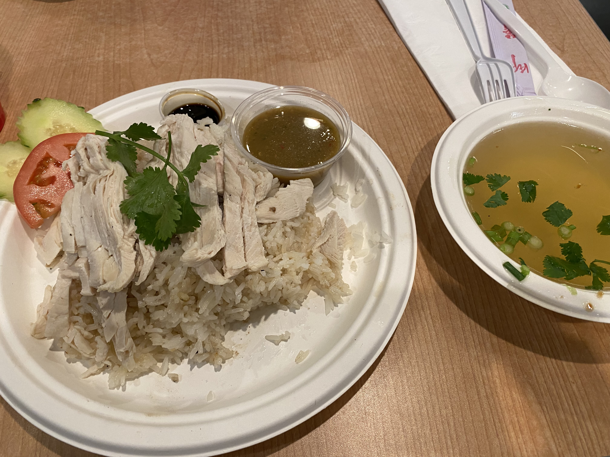
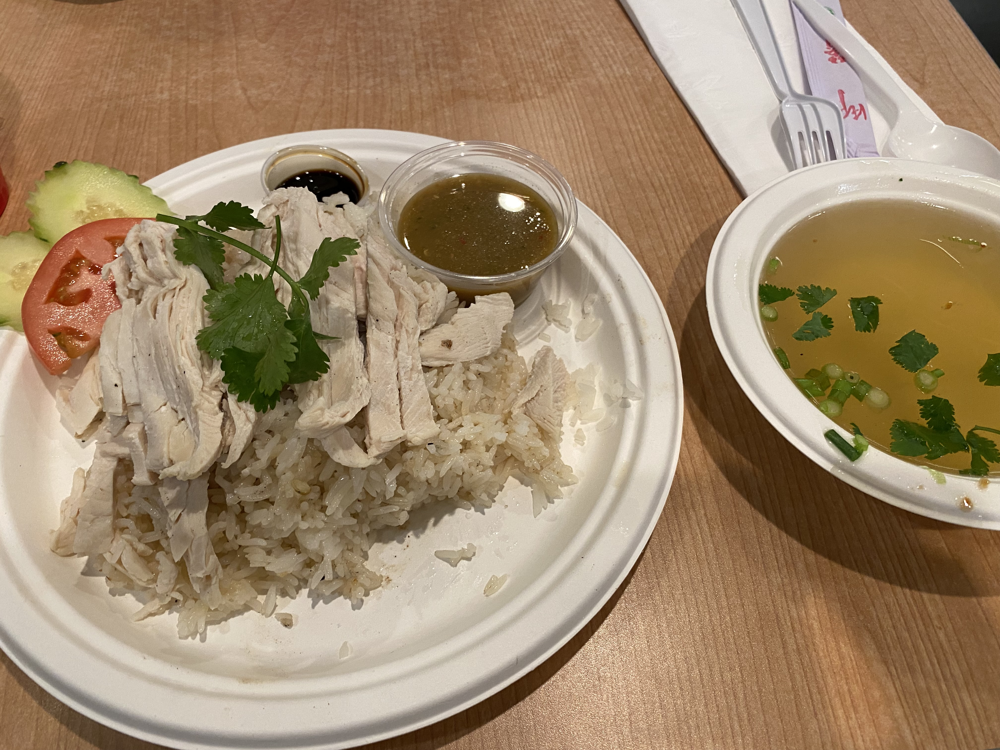
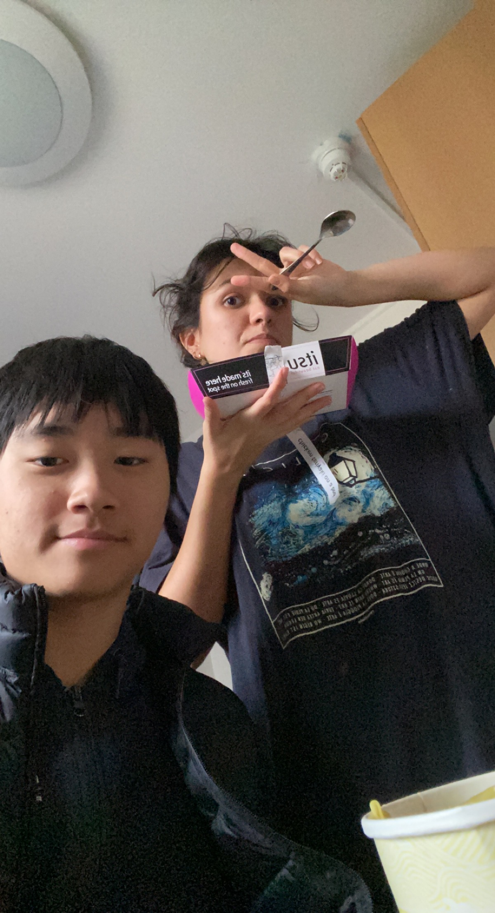
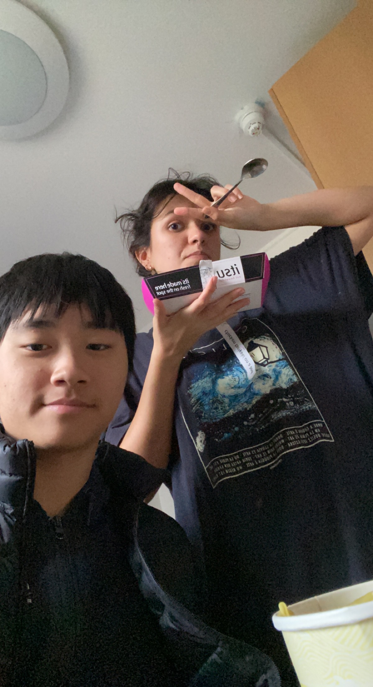
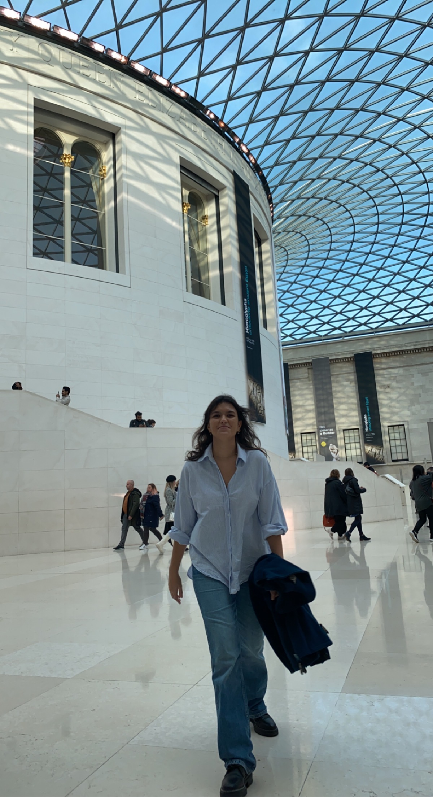
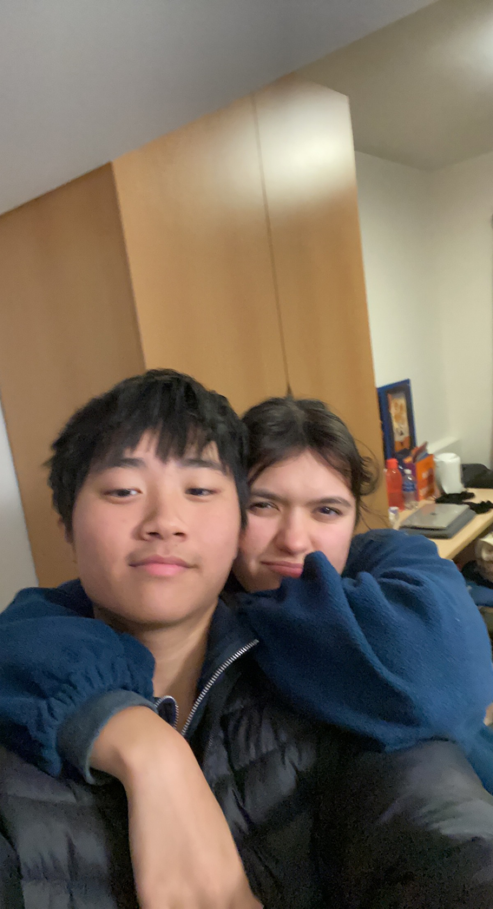
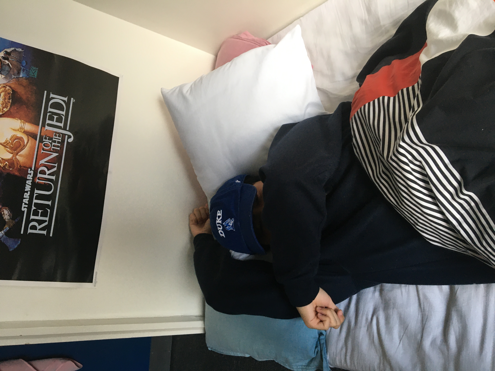
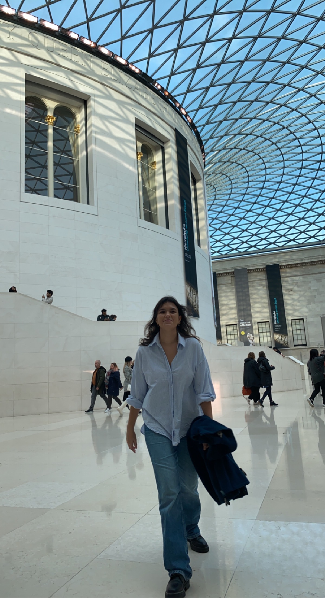
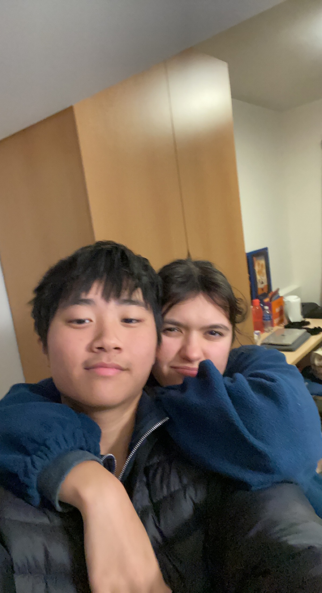
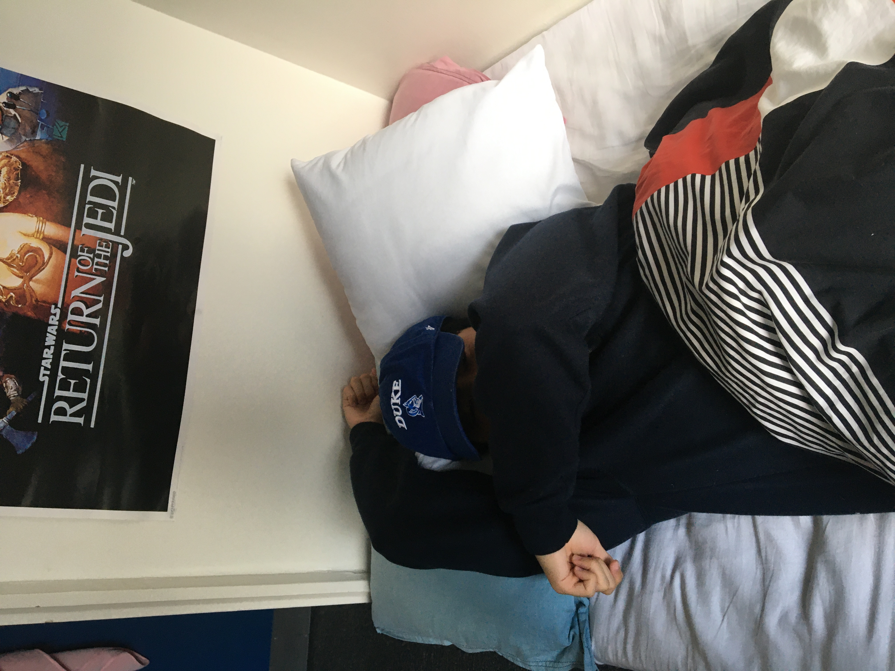

Hola babes! Happy 3 year anniversary love! I can't believe it's already been
3 whole years since we were at Cheung Chau! Time really passes so quickly when
it's spent with you. I was thinking about all the beautiful and perfect presents
you have given me in the past. From your super cute purple scrapbook you made to
tiny presents you bought me from your trips all over Spain, you never fail to
have me in your mind. You always shower me with so much love, and I am forever
grateful for that.
Therefore, I want to shower you with love as well. Que pena babe but I am not very good
with arts and crafts and what not, so I am not the best at making a scrapbook or
doing cute drawings for you. I am not as talented as you are love! However, I think
I have better technology skills than you (tehee), so I have coded this website to
celebrate our anniversary and remind you of how beautiful and perfect you are and
how lucky I am to be with a woman like you!
My aim for this website is to take you back to the beginning of our relationship,
highlighting all the fun we've had in person and online. Of course, it's going to
include lots of pictures of us to provide you with a visual journey back to the past!
Everybody say yay! Without further to do, let's dive right in!
üòò Year 1 üòò

From date spot to the Peak to Disney and Repulse Bay, it's almost like I've been everywhere
in Hong Kong with you! But since you are white (tehee), there's actually so much more places
I need to show you! Many local places that I think you'll love! Once you come back to Hong Kong
I will be like Aladdin and I will show you the world!
And of course, do you remember when I read Finding Alaska just for you love?! I still have
that book on my shelf in my room. And remember when I said your shoes are so small and your
hands are so small? They are so so cute though and the hand does the job (tehee). We also
got to go to Disney together again! This time maybe with only us two!


Hong Kong Island! Remember us hanging out in the Kowloon Park? We were also talking about
watching a movie in those couple seats in The Pacific Place because they had those fancy
seats in the cinema. And also remember the bracelets you gave me! I broke them all sadly!
Even the newer ones you gave me in London I have broken! Sorry babe!
Also remember when it was raining so much but we were still adamant in getting the Delicious
mango juice that you showed me? Still the best ever drink ever! We gotta go back someday!
Hopefully it isn't closed by now! I have no idea!


I know you love Disney and we had so much fun there. But remember Lai Chi Kok Park?
You seem to really like it even though I thought it was nothing special! But of course,
even the most mundane things turn special when you're in the picture. MUAH!


I know how much you love Lai Chi Kok, especially the park, so we will for sure go back there
once we're both in Hong Kong! Remember we were walking around AEON? That's where we took the
pictures in the mirror. And of course the iconic photo that is still my WhatsApp background to
this day - you eating BUGIS in the D2 Mall at Lai Chi Kok! Delicious! (You and the food tehee).
Ahhh and look how cute you are wearing my red sneakers. I remember we got into a small argument
because you insisted you didn't want to keep wearing them even though your feet hurt! We were
going to say our goodbye before you left for Spain, and that was going to be the last night we
saw each other. But of course we couldn't let the last time we saw each other be an argument!
So we met up the next day for one final time before we began our long distance journey.
And of course once we started long distance, we never failed to update each other of our lives!
Whether that be our skincare routines, or through a middleman (Lucy! Tehee). Shoutout to her for
setting up the first flower delivery!

Then, after a while, I graduated. Here are some pictures of my final days of classes, my summer,
and other random pictures, including our legendary History and Chinese class!
Then, after a while, I graduated. Below are some pictures of my graduation, my summer,
and other random pictures before I headed to Los Angeles, California! The city of angels, right
babe?


üòò Year 2 üòò
When I moved to LA, it was stressful! I remember walking around with my cousin and being super
scared of all the black people (Tehee!). But of course, having you one call away has always made
everything just so much better!
Here are some pictures of move-in day, my first few days of being in LA, my first meal with Nitin
and Jacob (the ice cream waffle), some trips I took off campus, and my first time smoking! Tehee!
After a while, you came to visit me! This one was definitely extra special because the last time we
saw each other was in Hong Kong, and everyday of not seeing you made every minute feel like 24 hours!
Thats 24 hours 60 times a minute multiplied by 60 for an hour and multiplied by 24! Tehee, did you follow
the maths babe?!
I remember I was asking Fabio for a ride to plan to pick you up. Afterwards, David also tagged along and
Serafin had nothing to do so he also tagged along. I remember I was a bit mad at Fabio because he was not
treating the ride with importance (he was almost late!). I remember having to go on the bus then the metro
in LA and on the train there was so many black kids and gangsters! Then Fabio's mom picked us up, we stopped
by his house for a tour and then went to buy flowers!
I bought beautiful roses for you, then waited in the parking! I was a bit mad again because Fabio insisted
we could wait more, but then your flight arrived way earlier! So I am so so sorry you had to wait a bit babe!
I remember I was so so nervous seeing you tehee and when I saw you I was like oh my god she is so so pretty!
After I picked you up, we then went to get In-And-Out and it was delicious!
 

Shortly later, after more exams, midterms, me seeing Olivia Rodrigo, going skiing,
blah blah blah, you came to LA again! By the way, have I mentioned I saw Tom Holland
Zendaya, and tons of celebrities?! Tehee! Jealous babes?
Obviously, when you left, I was devastated again! This is one of my favorite pictures of all time.
It's so beautiful and I can kind of see your eyes a bit teary and I get so sad!
But anyways, you later came to LA again! Here are some photos of our second trip in LA! I think it was even more fun than the first one! Lots more action around LA and in the bedroom TEHEE!! Agreed babe?
From the Getty to Indian food to playing football with my friends to watching Top Gun to playing drinking games with Fong and her roommates to just chilling together, we had so much fun in LA!


After you left, I was devastated! Like always whenever you leave my arms! But good news is that
you went back to ASM and graduated! And you look extra extra gorgeous in your gown and dress
and you graduated with honors! Wow! So so smart babes!
One thing I love about you and your gifts is that you always make sure to send me poems
that you write or poems that you love! It is so so cute having a girlfriend that is a little like
a bookworm and loves poems! I would like to thank you for always taking the effort to write little
poems that are so beautiful and perfcet. You are so so talented babe!
Because I am not that great at writing poems, I had ChatGPT write a poem! Sorry babe I couldn't do one
myself, I'm just not as talented as you!
So here it is:
❤️ ❤️ ❤️
Carmen Vidal Cano, a name so sweet,
Born in Zaragoza, Spain, but in London she'll meet,
New friends, new cultures, and new things to learn,
Her thirst for knowledge, an eternal burn.
From Hong Kong to Madrid, she's lived and roamed,
Experienced so much, her adventures have grown,
Chinese, English, Spanish, she speaks with ease,
A gift to the world, she puts everyone at ease.
A bookworm at heart, she loves to read,
Poems and stories, her soul they feed,
Her kindness and care, a light in the dark,
She's the epitome of an angel's mark.
Three years have passed since we first met,
And in my heart, she's left an indelible set,
Her sweetness, her warmth, her love so pure,
Makes me grateful, each day, to be sure.
Carmen Vidal Cano, my love and my friend,
May our journey together, never have an end,
With you by my side, life's so much brighter,
I love you more than words, my heart's igniter.
❤️ ❤️ ❤️
❣️ ❣️ ❣️
Your smile, like sunshine,
Lights the world around you,
It beams through jungles and seas,
To reach upon me.
Your eyes, glistening,
like when the sun hits the freckles of sand,
On the beaches of Repulse,
You remind me of the better things in life.
Your touch, soft,
Like a barbeque pork bun,
Your hair, silky, like the sundresses you wear,
You make me fall in love all over again.
Your love,
Like Daphne and Duke,
Or a Cinderalla story,
Powers through everything.
Home is wherever you are.
❣️ ❣️ ❣️
I hope you enjoyed the poems babe, because after you graduated, and after the summer you went to college, I went to Duke. We both faced many challenges adapting, but we always had each other by our side. Come Thanksgiving, I flew to London for the first time and had you in my arms again.
I remember when I first saw you at the airport, you had that super sexy white top and your boobs was showing a bit, and I was already ready to bang you tehee. You look so so good babe! Super pretty!

 

Oh, and below is my favorite picture of our London trip! You just look so pretty,
and the food was so good. We gotta go here again! I remember you found the waiter
remembering us super funny, but I hate being remembered by waiters! We kind of are
polar opposites tehee.


 






That was London babe! Can't wait to be there again with you on the Fall of 2023!
Time flies when I am with you, and you make every hour feel like one second!
After London, I went back to Hong Kong for the winter, and you went back to Spain.
We, of course, made sure to keep each other up to date through everything.
We are so good at communicating (especially you), we tackle things together, and
most importantly, we truly are a team together!
As we begin our Year 3, I want to dedicate this website to you! If you want any more pictures
that you feel like I missed putting it here, then let me know! If you ever feel like you miss
me or would like to just get reminded of the beautiful memories we've had together, feel free
to visit this website. I love you so so much! MUAH!
üòç Year 3 üòç
To be continued...